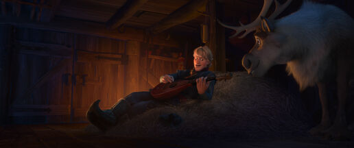

Why reindeer(s) are better than people, according to Kristoff.
Sven agrees too.
- People will beat, curse, and cheat you. Every single one of them is bad, except Kristoff.
- However, people smell better than reindeers. Kristoff is an exception, as he stinks.
Click here to watch the song "Reindeer(s) are better than people" from the first Frozen movie
Goodnight! Don't let the frostbite bite.